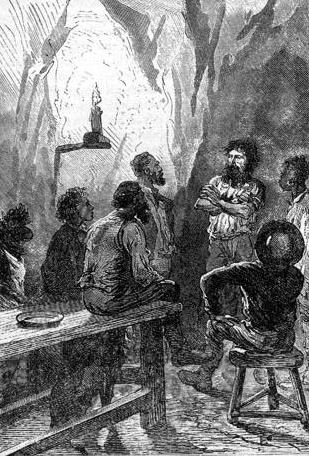
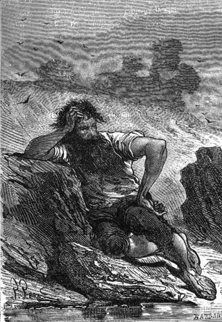
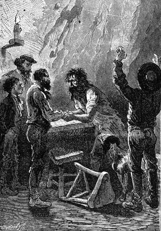

These last words justified the colonists’ premonitions. There was some past disaster in this unfortunate’s life, expiated perhaps in the eyes of men, but his conscience had still not absolved him. In any case, the criminal was remorseful, he repented, but this hand that was asked of him, which his new friends would have cordially grasped, he did not feel worthy to offer to honest men. Nevertheless, after the scene with the jaguar, he did not return to the forest and after this day he did not leave the Granite House area.
What was his mystery? Would the stranger speak of it one day? The future would tell. In any event it was agreed that they would never ask him about his secret and that they would live with him as if they suspected nothing.
For several days the community life continued as it had always been. Cyrus Smith and Gideon Spilett worked together sometimes as chemists and sometimes as physicists. The reporter left the engineer only to hunt with Herbert because it would not have been prudent to let the lad roam the forest alone, and they had to be on guard. As to Neb and Pencroff, one day at the stables or at the poultry yard, another at the corral, without counting the tasks at Granite House, they had no lack of work.
The stranger worked alone and he resumed his usual existence, never present at mealtime, sleeping under some trees on the plateau and never mingling with his companions. It truly seemed that the society of those who had saved him was unbearable.
“But then,” noted Pencroff, “why did he ask for the help of his fellow men? Why did he throw this document into the sea?”
“He will tell us,” Cyrus Smith invariably replied.
“When?”
“Perhaps sooner than you think, Pencroff.”
And in fact, the confession day was near.
On the 10th of December, a week after his return to Granite House, Cyrus Smith saw the stranger coming to him. With a calm voice and a humble tone he said to him:
“Sir, I have a request to ask of you.”
“Speak,” replied the engineer, “but first let me ask you a question.”
At these words the stranger blushed and was on the point of leaving. Cyrus Smith understood what was passing in the guilty man’s soul. He was doubtless afraid that the engineer would question him about his past.
Cyrus Smith held him back.
“Comrade,” he said to him, “not only are we your companions but we are your friends. I insist on saying this to you and now I will listen to you.”
The stranger passed his hands over his eyes. He trembled and for a few moments he could not say a word.
“Sir,” he finally said, “I came to beg you to grant me a favor.”
“What?”
“Four or five miles from here, at the foot of the mountain, you have a corral for your domestic animals. These animals need to be cared for. Will you permit me to live there with them?”
Cyrus Smith looked at the unfortunate for a few moments with a sentiment of deep commiseration. Then:
“My friend,” he said, “the corral only has stables hardly fit for animals...”
“It will be good enough for me, sir.”
“My friend,” replied Cyrus Smith, “we will never interfere with you on anything. It pleases you to live at the corral. So be it. You will, however, always be welcome at Granite House. But since you wish to live at the corral we will make the necessary arrangements for your comfort.”
“That is not important. I will always manage.”
“My friend,” replied Cyrus Smith, who purposely insisted on this cordial appellation, “let us judge what we ought to do in this regard.”
“Thank you, sir” replied the stranger on leaving.
The engineer immediately told his companions about the proposition that had been made to him and it was decided that they would construct a wooden house at the corral and that they would make it as comfortable as possible.
That very day the colonists went to the corral with the necessary tools and a week had not passed when the house was ready to receive its host. It had been raised some twenty feet above the stables and from there it would be easy to keep surveillance over the mouflon flocks which then counted more than eighty head. Some furniture, a bed, a table, a bench, a wardrobe and a chest were made, and weapons, munitions and tools were brought to the corral.
The stranger however had not seen his new dwelling and he had allowed the colonists to work there without him, while he occupied himself on the plateau wanting doubtless to put the last touch on his work. As a matter of fact, thanks to him, the entire ground had been worked and was ready to be sowed as soon as the time would come.
It was the 20th of December that these arrangements had been completed at the corral. The engineer announced to the stranger that his dwelling was ready to receive him and the latter replied that he would sleep there that very night.
That evening the colonists were gathered in the large hall of Granite House. It was then eight o’clock when their companion was about to leave. Not wanting to inconvenience him by the need to say goodbye, which would perhaps be difficult for him, they had left him alone and had gone up to Granite House.
They had been chatting for a few moments in the large hall when a light knock was heard on the door. Almost immediately the stranger entered and without any other preamble:
“Gentlemen,” he said, “before I leave you, it is best that you know my story. Here it is.”
These simple words did not fail to vividly impress Cyrus Smith and his companions.
The engineer got up.
“We ask nothing of you, my friend,” he said. “You have the right to remain silent...”
“It is my duty to speak.”
“Be seated then.”
“I will remain standing.”
“We are ready to listen to you,” replied Cyrus Smith.
The stranger stood in a corner of the room, a little in the shadows. His head was bare, his arms crossed on his chest and it was in this posture that, in a muffled voice, speaking like someone who was forcing himself to speak, he made the following recital which his listeners did not once interrupt.

His head was bare, his arms crossed.
“On the 20th of December 1854, the steam pleasure yacht, the Duncan, belonging to the Scotch nobleman, Lord Glenarvan, dropped anchor off Cape Bernouilli on the western coast of Australia on the 37th parallel. On board this yacht were Lord Glenarvan, his wife, a major of the English army, a French geographer, a young girl and a young boy. These last two were the children of Captain Grant whose vessel, the Britannia, had been lost, men and cargo, the previous year. The Duncan was commanded by Captain John Mangles and carried a crew of fifteen men.
“This is the reason that the yacht found itself off the coast of Australia at this time.
“Six months earlier a bottle enclosing a document written in English, in German, and in French had been found in the Irish Sea and picked up by the Duncan. This document stated in substance that there still were three survivors from the wreck of the Britannia, that these survivors were Captain Grant and two of his men and that they had found refuge on a land whose latitude was given by the document but whose longitude was no longer legible, having been erased by the sea water.
“This latitude was 37°11′ South. Thus, the longitude being unknown, if they followed this thirty seventh parallel across the continents and the seas, they were certain to reach the land inhabited by Captain Grant and his two companions.
“The English admiralty having hesitated to undertake this search, Lord Glenarvan decided to attempt to find the captain himself. Mary and Robert Grant had been put in touch with him. The yacht, the Duncan, was equipped for a long voyage in which the lord’s family and the captain’s children would take part, and the Duncan, leaving Glasgow, crossed the Atlantic, doubled the Straits of Magellan and went up the Pacific to Patagonia where, according to a first interpretation of the document, they had thought that Captain Grant was a prisoner of the natives.
“The Duncan disembarked its passengers on the western coast of Patagonia and left in order to pick them up again on the eastern coast at Cape Corrientes.
“Lord Glenarvan crossed Patagonia following the thirty seventh parallel and not having found any trace of the captain, he embarked again on the 13th of November, in order to pursue his search across the ocean.
“After having unsuccessfully visited the islands of Tristan de Acunha and Amsterdam, situated on his course, the Duncan as I have said, arrived at Cape Bernouilli on the Australian coast on the 20th of December 1854.
“It was the intention of Lord Glenarvan to cross Australia as he had crossed America and he disembarked. A few miles from the shore was a farm belonging to an Irishman who offered his hospitality to the travelers. Lord Glenarvan acquainted this Irishman with the reasons that had brought him to these parts and he asked him if he knew about the three masted English vessel, the Britannia, which was lost less than two years earlier on the western coast of Australia.
“The Irishman had never heard anyone speak about this wreck; but, to the great surprise of those present, one of the Irishman’s employees intervened and said:
“‘My lord, praise and thank God. If Captain Grant is still living, he is living on Australian soil.’
“‘Who are you?’ asked Lord Glenarvan.
“‘A Scotchman like yourself, my lord,’ replied this man, ‘and I am one of the companions of Captain Grant, one of the castaways of the Britannia.’
“This man was called Ayrton. He was, in fact, the first mate of the Britannia as certified by his papers. But, separated from Captain Grant at the moment when the vessel was wrecked on the reef, he had believed until then that his captain had perished along with the entire crew and that it was he, Ayrton, who was the only survivor of the Britannia.

Ayrton.
“‘Only,’ he added, ‘it was not on the west coast but on the east coast of Australia that the Britannia was lost and if Captain Grant is still living, as the document indicates, then he is a prisoner of the Australian natives and it is on the other coast that you must look for him.’
“This man spoke with a clear voice and with an assured look. They did not doubt his words. The Irishman, in whose service he had been for a year, vouched for him. Lord Glenarvan believed in this man’s honesty and thanks to his advice, he resolved to cross Australia following the 37th parallel. Lord Glenarvan, his wife, the two children, the major, the Frenchman, Captain Mangles and several mates made up the small group under Ayrton’s direction while the Duncan, commanded by the second mate, Tom Austin, went to Melbourne, there to await Lord Glenarvan’s instructions.
“They left on the 23rd of December 1854.
“It is time to say that this Ayrton was a traitor. He was in fact the first mate of the Britannia, but after discussions with his captain he had tried to stir the crew to revolt and seize the vessel, and when Captain Grant touched shore on the western coast of Australia on the 8th of April 1852, he abandoned him there, which was only right.
“So this wretch knew nothing about the wreck of the Britannia. He came to know of it from Glenarvan’s recital. Since his abandonment he had become, under the name of Ben Joyce, the chief of some escaped convicts, and if he impudently stated that the wreck had taken place on the eastern coast, if he could get Lord Glenarvan to go in this direction, it was because he hoped to separate him from his vessel, seize the Duncan and make this yacht a pirate ship in the Pacific.”
Here the stranger stopped for a moment. His voice trembled but he continued with these words:
“The expedition left and began to cross Australia. It was naturally full of misfortune, since Ayrton or Ben Joyce as we may call him, directed it, sometimes preceded, sometimes followed by his band of convicts, who had been previously told what to do.
“However the Duncan had been sent to Melbourne for repairs. He tried to convince Lord Glenarvan to give him an order directing the Duncan to leave Melbourne to go to the eastern coast of Australia where it would be easy to seize it . After having led the expedition rather close to the coast, in the middle of vast forests where all resources were lacking, Ayrton obtained a letter which he was charged to carry to the second mate of the Duncan, a letter which gave the order for the yacht to proceed immediately to the eastern coast, to Twofold Bay, that is to say a few days travel from the place where the expedition had halted. It was there that Ayrton expected to rendez-vous with his accomplices.
“Just at the moment when the letter was about to be given to him, the traitor was unmasked and there was nothing he could do but flee. But this letter which would put the Duncan under his control, he had to have at all costs. Ayrton succeeded in getting it and two days later he arrived at Melbourne.
“Up to that point the criminal had succeeded in his odious project. If he could lead the Duncan to this Twofold Bay where it would be easy for the convicts to seize it and massacre its crew, Ben Joyce would become the master of the seas... God had to stop him from the accomplishment of these criminal designs.
“Ayrton, arriving at Melbourne, gave the letter to the second, Tom Austin, who, obeying its instructions, got under weigh immediately; but judge the disappointment and rage of Ayrton when the day after weighing anchor, he found that the second was conducting the vessel not to the eastern coast of Australia, to Twofold Bay, but rather to the eastern coast of New Zealand! He objected. Austin showed him the letter!... And in fact, thanks to a providential error made by the French geographer who had drafted the letter, the eastern coast of New Zealand was indicated as the destination.
“Ayrton’s plans had miscarried. He rebelled. They locked him up. He was taken to the coast of New Zealand not knowing what became of his accomplices nor what became of Lord Glenarvan.
“The Duncan cruised along the coast until the 3rd of March. On that day Ayrton heard gunfire. It was the firing of the Duncan’s cannons and soon Lord Glenarvan and all with him came on board.
“This is what had happened.
“After a thousand exertions and a thousand dangers, Lord Glenarvan had been able to complete his journey and arrive at the eastern coast of Australia at Twofold Bay. No Duncan. He telegraphed to Melbourne. They replied: ‘Duncan left on the 18th of this month for an unknown destination.’
“Lord Glenarvan could think of only one thing: that the honest yacht had fallen into the hands of Ben Joyce and that it had become a pirate vessel!
“However Lord Glenarvan did not wish to abandon his undertaking. He was a dauntless and courageous man. He embarked on a merchant vessel which took him to the western coast of New Zealand and crossed it on the 37th parallel without finding any trace of Captain Grant; but on the other coast, to his great surprise and by the will of Heaven, he again found the Duncan under the command of the second mate, waiting for him for five weeks!
“It was the 3rd of March 1855. Lord Glenarvan was now on board the Duncan, but Ayrton was also there. He was summoned to appear before the lord who wanted to extract from him all that the ruffian knew on the subject of Captain Grant. Ayrton refused to speak. Lord Glenarvan told him that at the next port they would put him in the hands of English authorities. Ayrton remained silent.
“The Duncan resumed its journey along the 37th parallel. However Lady Glenarvan undertook to overcome the ruffian’s resistance. Her influence finally swayed him and Ayrton, in exchange for what he could tell, proposed to Lord Glenarvan that they abandon him on one of the islets of the Pacific instead of delivering him to English authorities. Lord Glenarvan, deciding to learn all that he could concerning Captain Grant, consented to it.
“Ayrton then related his entire life and he stated that he knew nothing from the day that Captain Grant had landed him on the Australian Coast.
“Nevertheless Lord Glenarvan kept his word. The Duncan continued on its way and arrived at Tabor Island. It was there that Ayrton would be deposed, and it was also there that, by a true miracle, they found Captain Grant and his two men, precisely on the 37th parallel. The convict was to take their place on this desert islet and just as he was leaving the yacht, Lord Glenarvan made this statement:
“‘Here, Ayrton, you will be far from all land and without any possible communication with your fellow men. You will not be able to escape from this islet on which the Duncan leaves you. You will be alone, under the eye of God, who reads into the depths of the heart, but you will neither be lost nor ignored as was Captain Grant. However unworthy you are to be remembered by men, men will remember you. I know where you are, Ayrton, and I know where to find you. I will never forget it!’
“And the Duncan, getting underway, soon disappeared.
“This was on the 18th of March 1855.1
“Ayrton was alone but he lacked neither munitions, nor weapons, nor tools, nor seed. The convict had available to him the house constructed by the honest Captain Grant. It only remained for him to expiate in seclusion the crimes that he had committed.
“Gentlemen, he repented, he was ashamed of his crimes and he suffered. He told himself that if one day men would find him on the islet, he must be worthy to return among them. How the wretch suffered! How he labored to redeem himself through work! How he begged for redemption through prayer!
“And so it was for two or three years; but Ayrton, harassed by isolation, always looked to see if some vessel was in sight on the horizon. He asked himself if his period of expiation would soon be over. He suffered as he had never suffered. Ah! solitude was difficult for a soul undermined by remorse.
“But doubtless Heaven did not find him sufficiently punished. Little by little the wretch felt himself becoming a savage. Little by little he felt brutishness overcoming him. He could not say if it was after two or four years of abandonment, but finally he became the beast that you found.
“I have no need to tell you, gentlemen, that Ayrton, Ben Joyce and I are the same person.”
Cyrus Smith and his companions got up at the end of this recital. It was difficult to say at what point they had become affected. Such misery, such suffering and despair, exposed and bared to them!
“Ayrton,” Cyrus Smith then said, “you have been a hardened criminal but Heaven must certainly find that you have expiated your crimes. It has proved it by returning you to your fellow men. Ayrton, you are pardoned! And now will you be our companion?”
Ayrton drew back.
“Here is my hand,” said the engineer.

“Here is my hand,” said the engineer.
Ayrton rushed toward the hand that Cyrus Smith offered him and large tears flowed from his eyes.
“Do you want to live with us?” asked Cyrus Smith.
“Mister Smith, let me be still some time,” replied Ayrton, “let me be alone in the hut at the corral”
“As you wish, Ayrton,” replied Cyrus Smith.
Ayrton was about to leave when the engineer addressed one last question to him:
“Still another word, my friend. Since your intention was to live in isolation, why did you throw into the sea this document which put us on your trail?”
“A document?” replied Ayrton, who did not appear to understand what they were talking about.
“Yes, this document enclosed in a bottle which we found, which gave the exact position of Tabor Island.”
Ayrton passed his hand over his forehead. Then after having thought about it:
“I never threw any document into the sea!” he replied.
“Never?” cried Pencroff.
“Never.”
Ayrton bowed, went to the door, and left.